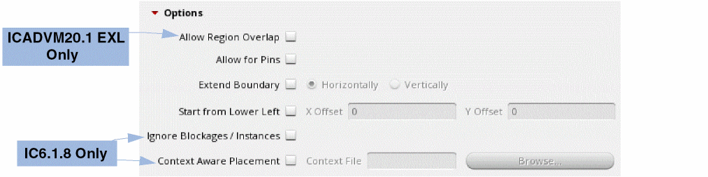

3
Placement Planning
This chapter describes the Virtuoso® Custom Digital Placer’s placement planning capability. Placement planning lets you define where in the layout view are the transistors and other design elements placed.
This chapter covers the following topics:
- Row Height Calculation
- Types of Rows
- Support for Flipped Row Creation
- Blockage Support
- Placement Restrictions - Designs with Only Devices
- Planning a Placement
- Planning Placement of Multi-Height Cells
- Planning Placement of Multi-Height Cells
- Planning Placement of Standard Cells
- Context-Aware Placement
- Assigning Edges for Boundary Cells
Row Height Calculation
The row height is determined based on the height of the components supported in the design:
-
For designs that contains only devices, the row heights are the height of the N and the P row.
For N row placement, the row height is calculated based on the maximum height of the Nmos devices. For P row placement, the row height is calculated based on the maximum height of the Pmos devices. - For designs that contains only standard cells, the row height is the height of the standard-cells.
-
For designs that contains both devices and standard cells, the row height is the same as the height of the standard-cell unless the device height exceeds the standard-cell height. In this case, the placer issues a warning indicating that the device height is used as row height during placement planning.(ICADVM20.1 Only) If the design uses FinFET devices—devices of type NFIN or PFIN—the row height is based on the standard cell height even if the combined height of the NFIN and PFIN devices exceeds the standard cell height. In this case, the placer always creates the row height based on the standard cell height, but issues a warning to indicate the same, if the combined height of the devices exceeds the standard cell height.
Types of Rows
The custom digital placer handles two different types of rows:
-
An OpenAccess row (
oaRow) is an OpenAccess database object recognized by all tools that support the OpenAccess database. It is represented in Virtuoso as afigGroupwith typerow.
An OpenAccess row requires appropriate site definitions (siteDefs) to be present in the technology database for the design. Instances are placed at the fixedsiteDeflocations within the row. -
A custom placement area is an object generated by the placer if there are no appropriate
siteDefsavailable with which to generate OpenAccess rows. It is represented as afigGroupwith typeplaceArea.
A custom placement area offers more flexibility in the placement of instances because the locations where devices can be placed are not fixed. However, the Virtuoso custom placement solution is guaranteed to recognize a custom placement area as a row object.
For information on how to manually create rows and custom placement area, see Creating Rows and Creating a Custom Placement Area in the Virtuoso Layout Suite documentation.
Snapping the Custom Placement Area
When manually creating a custom placement area in the layout environment by using the Create – PR Boundary – Custom Placement Area command, the custom placement area is automatically snapped to an appropriate grid depending on the state of the
Support for Flipped Row Creation
The Virtuoso Custom Digital Placer automatically flips the rows during creation, if required, to align them with the rail pattern specified. This implies that a horizontal (or vertical) row can have R0 or MX orientation, depending on the rail pattern associated with the row.
When following a GP rail pattern, the horizontal (or vertical) row can be created with an R0 orientation, as displayed in the figure below, and allowed component orientations set to R0/MY.
When following a PG rail pattern, a horizontal (or vertical) PG row can be created with a row orientation MX, as shown in the figure below, and allowed component orientations set to R0/MY.
The figure below illustrates how the row orientations are now automatically changed to match the specified rail pattern, which is GPPG in this case.
Blockage Support
The custom placer honors the following types of blockages:
-
Placement blockages: Components cannot be placed in the specified blockage area. The custom placer also honors partial placement blockages, which specify the density of the instances placed in the area covered by the blockages.
The density of partial blockages should be greater than 0 and less than 100. For example if the density of a partial placement blockage is 60 percent, the placer tries to keep the density of the instances that are placed in that area to be around 60 percent of the global utilization. - Routing blockages: Pins cannot be placed in the specified blockage area. Layers of the blockage are not considered. However, standard cells and devices can be placed in the blockage area.
- Pin blockages: Pins cannot be placed in the specified blockage area. Layers of the blockage are not considered. However, standard cells and devices can be placed in the blockage area.
All other types of blockages are not honored.
Placement Restrictions - Designs with Only Devices
The following placement restrictions apply for designs that contain only devices:
- All rows must be horizontal.
- All rows have the same width and span the entire placement region, although the row width can vary if the region is polygonal.
- Each row can contain either NMOS or PMOS devices, but not both and not any other types of components.
- There are equal numbers of NMOS and PMOS rows.
- There is a regular arrangement of alternating power and ground rails between rows:
- Device rotation depends on the row and pattern.
-
The rows can extend outside of the boundary or cluster.
Planning a Placement
Use the Placement Planning form to prepare your design for placement before you run the Virtuoso® Custom Digital Placer. Select Place – Custom Digital – Placement Planning to display the Placement Planning form. The options in the form are organized in tabs, which control the following placement settings.
- (ICADVM20.1 Only) Adding Boundary Cells
- Generating Tap Cells
- Defining Rows
- Setting Other Placement Parameters
(ICADVM20.1 Only) Adding Boundary Cells
At advanced nodes, adjacent cells (core cells) are placed in close proximity, which could lead to shots and DRC violations. Adding boundary cells around core cells lets you isolate the core cells from each other, and therefore helps prevent such undesired effects.
Boundary cells are represented by cells that have their component class set to BOUNDARYCELL. Component types are defined in the Cells table of the
After ensuring that the boundary cell definitions are in place, you can start inserting them between the core cells in your design.
Use the options on the Boundary Cell tab of the Placement Planning form to insert boundary cells.
- Specify whether you want to select boundary cells based on their Component Types or Cell Names.
-
Click Choose to display the Select Cells form. The options in the form differ depending on whether Component Types or Cell Names was selected.
-
When Component Types is selected, the following Select Cells form is displayed.
In the Select Cells form: - Select the required Comptypes. The corresponding Library and Cells entries are listed.
- Select the required Library and Cells entries.
-
Click Add. The selected cellviews are listed in the Selected Cells text box.
- Click OK.
-
With Cell Names selected, the following Select Cells form is displayed.
In the Select Cells form:
- Select the required Library, Cell, and View.
- Click Add. The selected cellviews are listed in the Selected Cells text box.
-
Click OK.
The selected cells are populated in all the applicable fields on the Boundary Cell tab of the Placement Planning form.
-
When Component Types is selected, the following Select Cells form is displayed.
- Select Place Outside Region to generate boundary cells outside the row region. As a result, the placement region is shrunk by a value equal to the width of the boundary cells.
- Select Place On Top Of Row Cells to allow the placement of boundary cells over any existing standard cells on the left, right, top, and bottom rows.
- Select the boundary cells to be inserted in the Left and Right edges. Select Mirror to apply a mirrored orientation to these cells.
- Select the boundary cells to be inserted in the corners – Top Left, Top Right, Bottom Left, and Bottom Right. Select Mirror to apply a mirrored orientation to these cells.
- Select the boundary cells to be inserted in the Top and Bottom edges.
- Before inserting boundary cells, navigate to the other tabs to define the tap cells and rows that need to be added.
- Open the Create tab to specify the placement region and other generic settings.
- Ensure that Boundary Cells is selected.
-
Click Insert.For more information about the boundary cell types, depending on the position of the boundary cell relative to the standard cell row, see Valid edge assignments in CPH window.
Related Environment Variables:
- boundaryCellType
- insertBdryCells
- topRowBdryCell
- topTapBdryCell
- botRowBdryCell
- botTapBdryCell
- leftBotCornerBdryCell
- leftEdgeBdryCell
- leftTopCornerBdryCell
- rightBotCornerBdryCell
- rightEdgeBdryCell
- rightTopCornerBdryCell
- topBotRowPlaceable
- leftBotEdgeBdryCell
Generating Tap Cells
After specifying boundary cell parameters, you can (optionally) insert either single-height or multi-height tap cells in the empty spaces between the standard cells. Tap cells are a set of contacts that are used to reduce latch-up effects between power and ground connections and the connections with wells or substrate contacts.
Tap cells are represented by cells that have their component class set to STDSUBCONT. Component types are defined in the Cells table of the
Use the options on the Tap Cell tab of the Placement Planning form to insert tap cells before running Custom Digital Placer.
Corresponding SKILL function:
-
Select either Component Types or Cell Names to specify the tap cells. With Component Types selected, all valid tap cells, which have their component type set to
STDSUBCONT,are automatically listed in the Tap Cells text box. You can edit this list. -
Click Choose to display the Select Cells form. The options in the form differ depending on whether Component Types or Cell Names is selected.
-
When Component Types is selected, the following Select Cells form is displayed.
In the Select Cells form, all valid cells are automatically listed in the Selected Cells text box. You can add or remove cells based on your requirement. -
With Cell Names selected, the following Select Cells form is displayed.
In the Select Cells form: - Select the required Library, Cell, and View.
- Click Add. The selected cellviews are listed in the Selected Cells text box.
- Click OK.
The selected cells are populated in all the applicable fields on the Tap Cell tab of the Placement Planning form. -
When Component Types is selected, the following Select Cells form is displayed.
-
Select a Mode to specify whether the tap cells must be Static or Flexible.
-
Static: Fixes the positions of tap cells as per the exact spacing values. Therefore, any change to the core cell placement does not affect the placement of the static tap cells.The following options are available only in the Static mode:
-
Flexible: Does not fix the positions of tap cells. Therefore, changes to core cell placement alter the tap cell placement. Use the Maximum Spacing and Minimum Spacing options to define a spacing range in the Flexible mode.
-
Static: Fixes the positions of tap cells as per the exact spacing values. Therefore, any change to the core cell placement does not affect the placement of the static tap cells.
-
(ICADVM20.1 Only) Specify the Pattern in which the tap cells must be inserted. You can select between the Regular and Checker Board patterns.
-
(optional) Specify the Skip Row Count, which specifies the rows that must be skipped during tap cell placement. The top row cannot be skipped. In the following example, alternate rows are skipped.
- Specify the Offset from Row Start, which is the initial offset for the first tap cell in each row. This option is available only when Mode is set to Static.
-
(ICADVM20.1 Only) Select Avoid Abutment to specify that the tap cells must not be abutted vertically. By default, tap cells are abutted.
-
(ICADVM20.1 Only) Select Periodic to insert tap cells periodically from the list of available cells starting from the bottom lower left.
-
Select Lock Tap Cells to apply the settings of Flexible tap cells and then lock the tap cells to their positions. This option is not available in the Static mode.
Related Environment Variables:
- topTapBdryCell
- avoidAbutment
- insertSubstrateContacts
- lockTap
- packedPlacement
- periodicTap
- rowTapEndOffset
- subContInAlternateRow
- subContMaxSpacing
- subContMinSpacing
- substrateContactType
Defining Rows
Row-based placement provides tremendous advantage over the conventional placement methods. Row-based placement helps improve routability, achieve better wire length after routing, and resolve illegal placements by balancing the number of instances placed in each row. It also helps resolve overlaps between the devices in each row. Use the options on the Row tab to define the row settings before generating them in the placement region.
-
(ICADVM20.1 Only) Select the Row Template to be used to generate rows in the layout canvas. Use the Row Template Manager to define row templates.
If you select a row template, the Row Parameters and Rails sections are collapsed. Number of Rows is the only option available in the Row Parameters section, and its value is reset to Maximum.
If the selected row template has boundary cell and tap cell definitions, then these definitions are honored. In that case the settings in the Boundary Cell and Tap Cell tabs are ignored. -
(ICADVM20.1 Only) Select Use Partial Template to allow partial row templates while filling the placement region. Therefore, the selected row template is repeated multiple times, and the remaining space at the top, which is less than the height of a row template, is filled with a partial row template.
When Use Partial Template is not selected, only full row templates are allowed. Therefore, any remaining space at the top, which is less than the height of a row template, is left empty. - (ICADVM20.1 Only) Specify the reference grids (Vertical Grid and Horizontal Grid) for snapping the devices and rows during placement.
- (ICADVM20.1 Only) Specify the offsets (Vertical Offset and Horizontal Offset) that must be applied to rows after they are snapped to the reference grids.
- Expand the Row Parameters section to define the row parameters.
-
Specify the Number Of Rows. Options are:
- Auto: Automatically calculates the number of rows depending on the number of devices to be placed and the specified Row Utilization (%).
- Maximum: Accommodates the maximum number or rows in the placement region.
- Specify: Lets you specify the number of rows to be generated. If the specified number of rows cannot be accommodated within the boundary, for example if the row height is greater than the region height, then an appropriate warning is displayed.
- Specify a Row Utilization (%) value to indicate the space available for placing components. The remaining space is used for routing. The higher the utilization value, the lesser the space available for the router to route the design. The lower the utilization value, the more free space is made available for the router.
- Specify the Row Spacing between rows. If a value is not specified, then the placer automatically calculates a value.
- Specify whether the Row Site Pitch value will be calculated automatically or defined manually.
- Specify whether the value calculated for the number of Row Sites must be used as is or rolled down to the nearest Odd or Even number.
- Specify the Power/Ground Pattern for alternating rails between rows. Available patterns are G-P, P-G, G-P-P-G, and P-G-G-P. This option lets you flip rows and save space by sharing power or ground rails between the rows.
- Expand the Rails section to define rail parameters.
- Select Generate Rails to create rails.
- Specify the Rail Position with respect to the rows. Available options are Inside, Outside, and Center.
- Specify the Power Net to which the rail belongs.
- Specify the Ground Net to which the rail belongs.
- Specify the Layer on which the rail must be drawn. If rails are not created for any reason, then a suitable warning message is displayed.
- Specify the Width of the rails.
Example 1:
The following parameters are specified:
Here, the power rails are not shared because the Row Spacing is not 0.
Example 2:
The following parameters are specified:
Here, ground rails are shared because the Row Spacing is 0.
Related Environment Variables:
- allowRowsBeyondRegion
- generateRails
- interRowSpacer
- intraRowSpacer
- numRowOption
- numRowSites
- numTemplateRowOption
- rowCount
- rowsFromLowerLeft
- rowGroundLayer
- rowGroundName
- rowGroundWidth
- rowOffsetX
- rowOffsetY
- rowPowerLayer
- rowPowerName
- rowPowerWidth
- rowSpacingOption
- rowTapEndOffset
- rowTemplateName
- rowUtilization
- row2RowSpacing
- rowPitchOption
- rowPitchValue
- templateRowCount
- topBotRowPlaceable
- usePartialTemplate
Setting Other Placement Parameters
After defining the Boundary Cell, Tap Cell, and Row parameters, the final step is to define the generic placement settings before running the command. Use the options on the Create tab to define the generic settings.
- Select whether you want to generate Rows, (ICADVM20.1 Only) Boundary Cells, and Tap Cells.
-
Select a placement Region. You can either select Boundary and select an existing boundary (default is PR Boundary) or select Placement Region to define a custom placement region.
When Boundary is set torowRegion, the row template selected on the Row tab is considered. A row region,as defined in the row template is created. If the row template has boundary cell and tap cell definitions, then the settings in the Boundary Cell and Tap Cell tabs are ignored.
With Placement Region selected, you can define a custom placement region by one of the following methods:
- By defining a rectangular region:- Select Rectangle.
- Type the X and Y coordinates of the lower-left corner of the region in the Origin X and Origin Y fields. Notice the X and Y coordinates of the cursor position in the status line at the top of the layout window. If you do not type any coordinates, the new row is placed at the lower-left corner of the region.
- Type the Width and Height dimensions for the region.
- Click Update.
- By defining a rectilinear region:
- By drawing in the canvas (manually) - Expand the Options section.
-
(ICADVM20.1 EXL Only) Select Allow Region Overlap to allow the presence of overlapping row regions in the placement region. Existing row region is maintained and a new row region is generated over it. You can use this option to create partial overlapping row regions.
When running the placer, placement of instances depends on the selected placement region as follows:- Row region: Instances are placed only in the selected row region. All other overlapping row regions are considered as blockages.
-
PR boundary: Instances are placed on all overlapping row regions that exist within the PR boundary. Instances are placed in row regions according to their allowed component types. When an instance is placed in the outer row region, the inner row region is considered blockage. In case of partial overlap between two row regions, nothing is placed in the overlapping area.
- Select Allow for Pins to reserve space for pins. The budgeted pin space equals the size of the pin plus the spacing rule inside the boundary edge, which helps avoid pin overlaps. This option is available only when Region is set to Boundary.
- Choose Extend Boundary to expand the row and the PR boundary beyond the specified region, wherever needed. Also specify whether rows are to be stretched Horizontally or Vertically. This option is available only when Region is set to Boundary.
-
Select Start from Lower Left to create rows from the lower-left side of the PR boundary or region. Specify the corresponding row X Offset X and Y Offset values.
-
(IC6.1.8 Only) Select Ignore Blockages / Instances to ignore the existing blockages and instances and create rows over these blockages and instances.
 - (IC6.1.8 Only) Select Context Aware Placement to enable context-aware, row-based placement. Select a Context File, which is an XML file containing edge spacing constraint information for performing context-aware placement.
-
Click Insert to generate the specified boundary cells, tap cells, and rows in the layout canvas.
Planning Placement of Multi-Height Cells
The Virtuoso Custom Placement solution supports the placement of multi-height standard cells. Multi-height cells are standard cells that are double, triple, or other multiples of the height of a single-height standard cell. This implies that during row estimation, if the placer encounters double-height (2x), triple height (3x), or any multi-height (Hx) cells in the design, it still creates rows with the height of a standard, single-height cell (x). But, for placing these multi-height cells, the placer budgets more space.
In a design with double-height cells, each row is half the height (x) of a double-height (2x) cell. Therefore, the double-height cells along with the specified rail pattern occupy two rows each.
Both PGGP and GPPG rail patterns are supported and these patterns can co-exist in a design to ensure uninterrupted power and ground connectivity to the cells, as shown in the figure below.

If the design had cells that were triple or any other integer multiple of the height of a standard cell, the placer would budget for them similarly, by considering their height as an integer multiple of the standard single height cell. However, the placer creates single-height rows for a multi-height design only if all the cells in the design have heights that are integer multiples of the single-height cell.
For example, if the cell heights are 3.0, 6.0, 9.0, and 12.0; the placer creates rows of height 3.0 because that is the height of the single-height cell.
If the height of even a single cell in the design is not an integer multiple of the single-height cell, the placer creates rows that are the height of the largest cell. For example, if the cell heights are 3.0, 4.0, 6.0, 9.0, and 12.0; the placer creates rows of height 12.0.
-
To ensure that multi-height cells are accommodated within the rows and the cells are not placed outside, the placer automatically sets the row spacing to
0. - To provide optimal placement results with designs that carry multi-height cells, the placer might perform several iterations before generating the final placement. Therefore, designs that have multi-height cells might take longer to place.
If you notice that in spite of running several iterations, the placement results are not as desired, you can choose to run the placer again.
Planning Placement of Standard Cells
If standard cells are placed using the regular placement method, they can get placed too close together, resulting in spacing violations. The litho and stress effects due to neighboring layout cells at lower nodes can further affect cell delay and leakage. Therefore, placement planning should pre-empt possible placement challenges and aim for context-aware row-based placement.
To achieve context-aware placement, VCP honors the cell-to-cell boundary conditions called cell-edge characterizations. The cell-edge characterization defines that a specific edge type, such as edge type 1 or 2, that is assigned to the LEFT or RIGHT edge of a standard cell be placed with a specific edge type, such as 2 or 3, that is assigned to the LEFT or RIGHT edge of another standard cell such that the cells be placed adjacent to each other, within acceptable spacing values as defined using the LEF58_CELLEDGESPACINGTABLE property.
To define cell-edge characterizations, the custom placer uses the following LEF 5.8 edge properties defined in the standard cell masters:
LEF58_EDGETYPE
Use the LEF58_EDGETYPE property to assign edge types for standard cell boundaries. For example:
EDGETYPE {RIGHT | LEFT | TOP | BOTTOM}
The acceptable spacing between the edges is defined in the LEF58_CELLEDGESPACINGTABLE library definition by referring to the above edge types.
techLib. The property directly on the cellview is given preference.
For information about the LEF58_EDGETYPE property, see the Edge Type Rule in the
LEF58_CELLEDGESPACINGTABLE
LEF58_CELLEDGESPACINGTABLE is a spacing rule table that defines the minimum acceptable spacing that must be maintained between two abutting edges of different edge types, EDGETYPE1 and EDGETYPE2.
An example of the edge spacing table is given below:
| Edge Type 1 | Edge Type 2 | Spacing (in micron) |
To achieve context-aware placement, the adjacent edges of standard cells should be placed such that they meet the spacing constraints defined in the table above.
Virtuoso Custom Digital Placer honors the LEF58_CELLEDGESPACINGTABLE property. However, the following properties are partially honored. The following table describes VCP behavior when these properties are set:
|
Specifies that two abutted macros of the given edge types are allowed |
|
|
Considers these groups only if the |
|
For more information about LEF58_CELLEDGESPACINGTABLE, see the Cell Edge Spacing Table Rule in the
Context-Aware Placement
To support context-aware placement planning of standard cells, Virtuoso Custom Placement Solution provides a Context Aware Placement option on the Component tab of the Placement Planning form. The option can also be controlled using the
If placement planning needs to be context-aware, define the cell edge and spacing constraints in the technology LEF and the macro LEF. Also, select the Context Aware Placement option on the Placement Planning form. Alternatively, if the constraint information is not defined in the LEF files, provide an XML file that contains the required constraint information. A sample XML file carrying the context information is displayed below.

If the XML file is unavailable or an invalid file name is specified, the placer looks for the required information in the technology LEF and the Macro LEF.
The placer performs placement planning in accordance with the specified LEF58_EDGETYPE and LEF58_CELLEDGESPACINGTABLE properties, budgeting extra rows to accommodate the context-aware standard cells.
The placer looks for the LEF58_EDGETYPE property on the cell masters that are instantiated in the current cellview. If not found, the placer looks for the property in the abstract views of the cell masters.
The placer looks for LEF58_CELLEDGESPACINGTABLE property in the following order:
-
In the user-specified library, using the
cdsEnv ("layoutXL.placement", "cellEdgeSpacingTableLib")command. - In the current cellview.
- In the current design library.
- In the attached technology library and all the referenced technology libraries.
- In all the reference libraries (of the master cellviews).
- In the technology file of the attached technology library.
Assigning Edges for Boundary Cells
The edge assignments for boundary cells types are done in the Configure Physical Hierarchy (CPH) window - Component Types mode. Depending on these assignments, a filtered list of cells is displayed in the various edge drop-down lists on the Defaults tab.
Example: In the CPH window, the Edge type for a set of boundary cells (with their Component class BOUNDARYCELL) is set to Left and Right. This setting is automatically propagated to the Boundary Cells Placement form. When the corresponding Component Type is selected, the boundary cells are listed only in the Left Edge and Right Edge drop-down lists.
Valid edge assignments in CPH window
Return to top